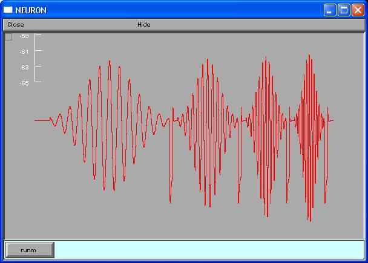

NEURON mod files from the paper: Marcelin B, Chauvière L, Becker A, Migliore M, Esclapez M, Bernard C. h channel-dependent deficit of theta oscillation resonance and phase shift in temporal lobe epilepsy, Neurobiol Dis. 2008 Dec 16. [Epub ahead of print] In the paper, this model was used to confirm and support experimental data suggesting that the neuronal/circuitry changes associated with temporal lobe epilepsy, including Ih-dependent inductive mechanisms, can disrupt hippocampal theta function. The simulation theta.hoc reproduces the upper left trace in Fig.5A of the paper.  Be aware that the simulation is rather long (several hours). Under unix systems: to compile the mod files use the command nrnivmodl and run the simulation hoc file with the command nrngui theta.hoc Under Windows systems: to compile the mod files use the "mknrndll" command. A double click on the simulation file theta.hoc will open the simulation window. Under MAC OS X: Drag and drop the extracted theta folder to the mknrndll icon. Drag and drop the mosinit.hoc file to the nrngui icon michele.migliore@pa.ibf.cnr.it